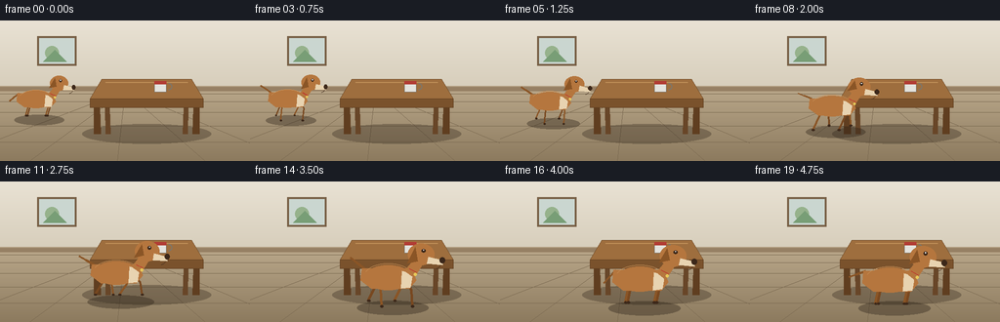
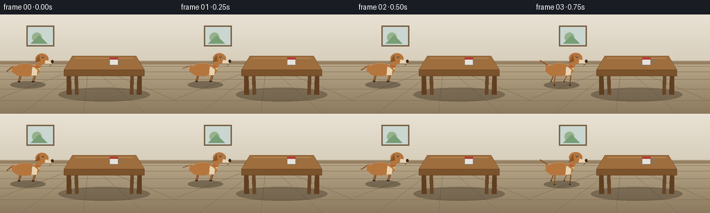

CODING AGENTS AS PIXEL WORLD MODELS
traex/Seed-2.1-Pro-0915 · dynamic_spatial_relationship_0000
点击播放 · 原生 RGB 像素
逐轮保存的候选
回放视频、检查图与代码变化。
每份候选均可单独播放。实际图片检查记录在下方工具轨迹中。
候选 01播放与检查图
点击播放 · 原生 RGB 像素

展开代码变化
--- 上一保存版本
+++ 本次保存版本
@@ -0,0 +1,237 @@
+"""Text-to-video: a dog starts left of a table, then runs in front of it.
+
+Pure PIL/numpy procedural rendering, 20 RGB frames at 256x144, 4 fps.
+"""
+import math
+import numpy as np
+from PIL import Image, ImageDraw
+
+import artifact_io
+
+W, H, N, FPS = 256, 144, 20, 4.0
+SS = 2 # supersampling factor
+
+
+def smoothstep(t):
+ t = max(0.0, min(1.0, t))
+ return t * t * (3.0 - 2.0 * t)
+
+
+def lerp(a, b, t):
+ return a + (b - a) * t
+
+
+# ---------------------------------------------------------------- scene
+def draw_background(img):
+ d = ImageDraw.Draw(img)
+ horizon = 72 * SS
+ # vertical wall gradient
+ top = np.array([233, 226, 212], dtype=float)
+ bot = np.array([214, 205, 186], dtype=float)
+ for y in range(horizon):
+ c = tuple((top + (bot - top) * y / horizon).astype(int))
+ d.line([(0, y), W * SS, y], fill=c)
+ # floor gradient
+ ftop = np.array([183, 165, 136], dtype=float)
+ fbot = np.array([140, 122, 94], dtype=float)
+ for y in range(horizon, H * SS):
+ c = tuple((ftop + (fbot - ftop) * (y - horizon) / (H * SS - horizon)).astype(int))
+ d.line([(0, y), W * SS, y], fill=c)
+ # baseboard
+ d.rectangle([0, horizon - 5 * SS, W * SS, horizon], fill=(150, 128, 100))
+ d.line([(0, horizon - 5 * SS), (W * SS, horizon - 5 * SS)], fill=(178, 158, 128), width=SS)
+ # framed picture on the wall
+ px, py = 38 * SS, 16 * SS
+ d.rectangle([px, py, px + 40 * SS, py + 30 * SS], fill=(120, 96, 70))
+ d.rectangle([px + 2 * SS, py + 2 * SS, px + 38 * SS, py + 28 * SS], fill=(202, 214, 208))
+ d.ellipse([px + 8 * SS, py + 10 * SS, px + 22 * SS, py + 24 * SS], fill=(150, 178, 140))
+ d.polygon([(px + 6 * SS, py + 26 * SS), (px + 18 * SS, py + 14 * SS),
+ (px + 30 * SS, py + 26 * SS)], fill=(120, 158, 118))
+ # floorboard perspective lines
+ for k in range(1, 6):
+ yy = horizon + (H * SS - horizon) * (k / 6.0) ** 1.7
+ d.line([(0, yy), (W * SS, yy)], fill=(122, 105, 80), width=max(1, SS // 2))
+ vp = (W * SS // 2, horizon)
+ for fx in (-60, 30, 120, 210, 300):
+ d.line([(fx * SS, H * SS), vp], fill=(122, 105, 80), width=max(1, SS // 2))
+
+
+def draw_shadow(img, cx, gy, rx, ry, alpha=90):
+ layer = Image.new("RGBA", img.size, (0, 0, 0, 0))
+ ld = ImageDraw.Draw(layer)
+ ld.ellipse([cx - rx, gy - ry, cx + rx, gy + ry], fill=(40, 30, 20, alpha))
+ img.alpha_composite(layer)
+
+
+# ---------------------------------------------------------------- table
+def draw_table(img):
+ d = ImageDraw.Draw(img)
+ # table-top corners (perspective trapezoid), coords at final resolution
+ bx0, bx1 = 104, 196 # back edge
+ fx0, fx1 = 92, 208 # front edge
+ by, fy = 60, 80 # back / front edge heights
+ thick = 9
+ leg_floor = 116
+ s = SS
+ # back legs first
+ d.polygon([(bx0 * s + 3 * s, by * s + 2 * s), (bx0 * s + 7 * s, by * s + 2 * s),
+ ((bx0 + 9) * s, leg_floor * s), ((bx0 + 4) * s, leg_floor * s)],
+ fill=(104, 70, 40))
+ d.polygon([((bx1 - 7) * s, by * s + 2 * s), ((bx1 - 3) * s, by * s + 2 * s),
+ ((bx1 - 4) * s, leg_floor * s), ((bx1 - 9) * s, leg_floor * s)],
+ fill=(104, 70, 40))
+ # table top
+ top = [(bx0 * s, by * s), (bx1 * s, by * s), (fx1 * s, fy * s), (fx0 * s, fy * s)]
+ d.polygon(top, fill=(158, 110, 62), outline=(110, 74, 40))
+ # front apron / thickness
+ d.polygon([(fx0 * s, fy * s), (fx1 * s, fy * s),
+ (fx1 * s, (fy + thick) * s), (fx0 * s, (fy + thick) * s)],
+ fill=(122, 82, 44), outline=(96, 62, 32))
+ # subtle top highlight
+ d.line([(bx0 * s + 4 * s, by * s + 3 * s), (bx1 * s - 4 * s, by * s + 3 * s)],
+ fill=(190, 142, 88), width=s)
+ # front legs
+ d.polygon([(fx0 * s + 4 * s, (fy + thick) * s), (fx0 * s + 10 * s, (fy + thick) * s),
+ ((fx0 + 11) * s, leg_floor * s), ((fx0 + 4) * s, leg_floor * s)],
+ fill=(96, 62, 32))
+ d.polygon([((fx1 - 10) * s, (fy + thick) * s), ((fx1 - 4) * s, (fy + thick) * s),
+ ((fx1 - 4) * s, leg_floor * s), ((fx1 - 11) * s, leg_floor * s)],
+ fill=(96, 62, 32))
+ # mug on the table
+ mx, my = 158, 62
+ d.rectangle([mx * s, my * s, (mx + 12) * s, (my + 11) * s],
+ fill=(228, 226, 220), outline=(120, 118, 112))
+ d.arc([(mx + 11) * s, (my + 2) * s, (mx + 18) * s, (my + 9) * s], -90, 90,
+ fill=(120, 118, 112), width=s)
+ d.rectangle([mx * s, my * s, (mx + 12) * s, (my + 3) * s], fill=(178, 60, 52))
+
+
+# ---------------------------------------------------------------- dog
+FUR = (181, 118, 62)
+FUR_D = (138, 85, 38)
+FUR_L = (204, 148, 90)
+CREAM = (232, 211, 176)
+DARK = (60, 40, 26)
+
+
+def draw_leg(d, attach, foot, color, width):
+ ax, ay = attach
+ fx, fy = foot
+ knee = ((ax + fx) / 2 + 3 * SS, (ay + fy) / 2 - 2 * SS)
+ d.line([attach, knee], fill=color, width=width)
+ d.line([knee, foot], fill=color, width=width)
+ d.ellipse([fx - width * 0.55, fy - width * 0.35, fx + width * 0.9, fy + width * 0.5], fill=DARK)
+
+
+def draw_dog(img, x, gy, scale, phase, running, frame):
+ """Side-view dog facing right. (x, gy): ground anchor at final-resolution pixels."""
+ s = scale * SS
+ d = ImageDraw.Draw(img)
+ bob = (abs(math.sin(phase)) * 2.2 * s) if running else math.sin(frame * 0.9) * 0.6 * SS
+
+ def P(lx, ly):
+ return (x * SS + lx * s, gy * SS + ly * s - bob)
+
+ # ---- legs (far pair first, slightly offset and darker)
+ shoulders = (10, -22)
+ hips = (-14, -24)
+ amp = 9 if running else 0
+ lift_amp = 7 if running else 0
+ leg_specs = [
+ (shoulders, phase + math.pi, True), # far front
+ (hips, phase, True), # far hind (diagonal)
+ (shoulders, phase, False), # near front
+ (hips, phase + math.pi, False), # near hind
+ ]
+ for (ax, ay), ph, far in leg_specs:
+ a = ph if running else 0
+ fdx = amp * math.sin(a)
+ lift = lift_amp * max(0.0, math.cos(a))
+ ox = -2 if far else 0
+ attach = P(ax + ox, ay)
+ foot = P(ax + ox + fdx, -3 + lift)
+ col = FUR_D if far else (120, 72, 32)
+ draw_leg(d, attach, foot, col, max(2, int(4.2 * s / SS)))
+
+ # ---- tail
+ tx, ty = P(-24, -30)
+ if running:
+ tail_ang = math.pi + 0.5 + 0.15 * math.sin(phase * 2)
+ else:
+ tail_ang = math.pi * 0.78 + 0.35 * math.sin(frame * 1.4)
+ tlen = 15 * s
+ mid = (tx + math.cos(tail_ang) * tlen * 0.55, ty + math.sin(tail_ang) * tlen * 0.55)
+ tip = (tx + math.cos(tail_ang) * tlen, ty + math.sin(tail_ang) * tlen)
+ d.line([(tx, ty), mid], fill=FUR_D, width=max(2, int(4.5 * s / SS)))
+ d.line([mid, tip], fill=FUR_D, width=max(2, int(3.6 * s / SS)))
+
+ # ---- body
+ body = [P(-26, -30), P(16, -30), P(20, -20), P(14, -13),
+ P(-18, -13), P(-27, -20)]
+ d.polygon(body, fill=FUR)
+ d.ellipse([*P(-24, -33), *P(16, -12)], fill=FUR)
+ # chest cream patch
+ d.polygon([P(8, -28), P(17, -26), P(15, -14), P(7, -13)], fill=CREAM)
+ # back highlight
+ d.arc([*P(-24, -34), *P(16, -14)], 200, 340, fill=FUR_L, width=max(1, int(1.4 * s / SS)))
+
+ # ---- neck + head
+ d.polygon([P(10, -28), P(20, -40), P(27, -36), P(18, -22)], fill=FUR)
+ hx, hy = P(24, -42)
+ hw, hh = 11 * s, 9 * s
+ d.ellipse([hx - hw, hy - hh, hx + hw, hy + hh], fill=FUR)
+ # snout
+ d.polygon([P(30, -40), P(42, -37), P(42, -33), P(29, -34)], fill=CREAM)
+ d.ellipse([*P(39.5, -39.5), *P(44, -34.5)], fill=DARK) # nose
+ # mouth
+ d.arc([*P(32, -36), *P(40, -30)], 10, 80, fill=DARK, width=max(1, int(s / SS)))
+ # eye
+ ex, ey = P(26, -45)
+ d.ellipse([ex - 1.6 * s, ey - 1.6 * s, ex + 1.6 * s, ey + 1.6 * s], fill=DARK)
+ d.ellipse([ex - 0.5 * s, ey - 1.0 * s, ex + 0.4 * s, ey - 0.1 * s], fill=(255, 255, 255))
+ # floppy ear (flutters while running)
+ flutter = math.sin(phase * 2) * 2 * s if running else math.sin(frame) * 0.5 * s
+ ear_base = P(19, -48)
+ d.polygon([ear_base, (ear_base[0] - 7 * s, ear_base[1] + 12 * s + flutter),
+ (ear_base[0] + 2 * s, ear_base[1] + 10 * s + flutter)], fill=FUR_D)
+ # collar
+ d.line([P(14, -30), P(20, -27)], fill=(190, 50, 45), width=max(2, int(2.4 * s / SS)))
+ tag = P(19, -25)
+ d.ellipse([tag[0] - 1.2 * s, tag[1] - 1.2 * s, tag[0] + 1.2 * s, tag[1] + 1.2 * s],
+ fill=(230, 200, 90))
+
+
+# ---------------------------------------------------------------- driver
+def make_frame(i):
+ img = Image.new("RGBA", (W * SS, H * SS))
+ draw_background(img)
+
+ # motion: idle left (frames 0-2), run (3..15), arrive in front (16..19)
+ p = smoothstep((i - 2) / 13.0)
+ running = 0.0 < p < 1.0
+ x = lerp(40, 148, p)
+ gy = lerp(100, 128, p)
+ scale = lerp(0.85, 1.22, p)
+ cycles = 4.2
+ phase = p * cycles * 2 * math.pi
+
+ # table shadow, then table
+ draw_shadow(img, 150 * SS, 116 * SS, 66 * SS, 10 * SS, alpha=80)
+ draw_table(img)
+
+ # dog shadow + dog (dog drawn over table -> occlusion means it is in front)
+ srx = 30 * scale * SS
+ draw_shadow(img, x * SS, (gy + 2) * SS, srx, 6 * scale * SS, alpha=95)
+ draw_dog(img, x, gy, scale, phase, running, i)
+
+ return np.asarray(img.convert("RGB").resize((W, H), Image.Resampling.LANCZOS), dtype=np.uint8)
+
+
+def main():
+ frames = np.stack([make_frame(i) for i in range(N)])
+ artifact_io.save(frames, ".")
+ print(f"saved {N} frames {W}x{H} at {FPS} fps")
+
+
+if __name__ == "__main__":
+ main()
可观测工具轨迹
实际执行的命令与返回图片。
命令 1exit 0
/bin/bash -lc 'cat prompt.txt GENERATION_RULES.md task_spec.json 2>/dev/null; ls -la'
命令 2exit 0
/bin/bash -lc 'cat artifact_io.py'
命令 3exit 0
/bin/bash -lc 'cd . && python generate.py && ls frames | head && ls -la pixels.npz inspection.png'
命令 4exit 0
/bin/bash -lc "cd . && python -c \"
import numpy as np
z=np.load('pixels.npz')['pixels']
print(z.shape, z.dtype)
frames=np.stack([np.array(__import__('PIL.Image',fromlist=['Image']).open(f'frames/{i:02d}.png')) for i in range(20)])
diffs=np.abs(frames.astype(int).reshape(20,-1)-np.roll(frames,1,0).reshape(20,-1)).reshape(20,-1).sum(1)
print('frame diffs:',diffs.tolist())
print('min/max:',frames.min(),frames.max())
\""视觉工具实际返回图片 1

视觉工具实际返回图片 2

保存候选 1 份；完成命令 4 次；可验证图片返回 2 张。原始 API 响应与完整日志保留在本地。